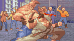

Real Name: Filippo
Callsign:
Other akas: ,
Birthday: 14/06/1971
Hometown: Torino, Italy
Member since: 2/2000 (clanleader)
Older affiliations: [MiA]
Favourite map: E1M2
Favourite weapon: grenade launcher
Status: active



Clanleader, webmaster, server administrator, modder, mapper and engine coder. His addiction to the game and his stubbornness made possible projects and clan facts that seemed impossible in the first place. His killer instinct did the rest.